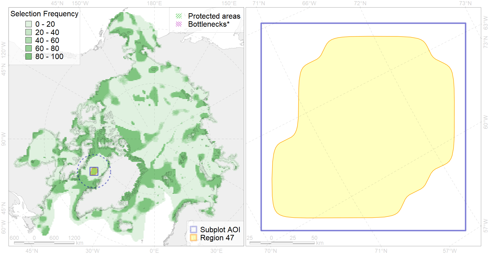

Region 47
Region 47
“ArcNet” scenario 33 achievement for region 47.
Use Accenter for advanced mode.

0
CFs inside of Region completely
2
CFs inside of Region at quarter
1
Complete-targets achievement by Region
2
Half-targets achievement by Region
| CF | Name | Target Achievement for Region | Proportion of Target Achievement in Region | Amount Proportion in Region |
|---|---|---|---|---|
| 5095 | Narwhal Somerset Island stock winter core distribution | 95.0% | 94.4% | 73.5% |
| 7151 | III.3.2. NW Greenland slope | 245.2% | 84.1% | 34.9% |
| 5086 | Narwhal Melville Bay stock winter core distribution | 22.5% | 21.2% | 16.5% |
| 5115 | Narwhal wintering areas | 37.4% | 19.0% | 9.7% |
| 9002 | polar bear of the BB (Baffin Bay) subpopulation distribution | 14.0% | 11.6% | 4.8% |
| 5103 | Bowhead whale Baffin population spring-autumn distribution | 16.7% | 9.1% | 4.3% |
| 2044 | Ringed seal whelping areas in the Baffin Bay region | 14.9% | 7.3% | 3.9% |
| 7149 | III.3.1.1. NW Greenland medium and low profile shelf | 29.3% | 7.3% | 3.8% |
| 7034 | North-western Greenland region | 14.5% | 8.9% | 3.5% |
| 3034 | Marginal Ice Zone distribution in July in the Baffin Bay LME | 13.1% | 5.4% | 3.3% |
| 2027 | Hooded seal foraging areas | 6.5% | 5.6% | 2.6% |
| 7148 | III.3. 1. Northwest Greenland shelf | 19.4% | 4.8% | 2.6% |
| 6034 | Ivory gull (Pagophila eburnea) Atlantic wintering grounds | 9.1% | 4.6% | 2.1% |
| 2021 | Harp seal foraging areas in the Baffin Bay region | 8.1% | 3.8% | 2.1% |
| 4032 | Range of the Arctic skate (Amblyraja hyperborea) (F2) | 37.5% | 2.9% | 1.2% |
| 4085 | Fish zoogeography, Arctic Region, Subarctic Transitional-Atlantic Province, Labrador – S Greenland District | 11.7% | 2.5% | 1.1% |
| 6083 | Thick-billed murre (Uria lomvia lomvia) wintering grounds | 2.8% | 2.0% | 0.7% |
| 4017 | Feeding/ migration area of the Greenland Shark (Somniosus microcephalus) (F1) | 2.9% | 1.7% | 0.7% |
| 5112 | Arctic Cetaceans (beluga, bowhead, narwhal) winter habitats as predicterd by MIZ | 1.0% | 0.8% | 0.4% |
| 4079 | Fish zoogeography, Arctic Region, Arctic Abyssal Province (11A -Scandian, 11B - Central-Arctic and 11C - Baffin Deep-sea Districts ) | 9.3% | 1.6% | 0.4% |
| 4045 | Feeding/migration area of the Pink Salmon (Oncorhynchus gorbuscha), native distribution (F23) | 4.8% | 0.8% | 0.3% |
| 7150 | III.3.1.2. NW Greenland glacial troughs | 2.5% | 0.4% | 0.3% |
| 4041 | Range of the Polar Cod (Boreogadus saida) (F35) | 1.9% | 0.7% | 0.2% |
| 4037 | Distribution of the Glacial cod (Arctogadus glacialis) (F34) | 1.3% | 0.3% | 0.1% |
| 5104 | Bowhead whale Baffin population winter distribution | 0.4% | 0.2% | 0.1% |
| 5078 | Narwhal Eclipse Sound stock winter core distribution | 0.0% | 0.0% | 0.0% |
| 5041 | Bowhead whale summer concentrations in the Baffin Bay | 0.0% | 0.0% | 0.0% |
| 4059 | Range of the Greenland Halibut (Reinhardtius hippoglossoides) (F 49) | 0.5% | 0.0% | 0.0% |